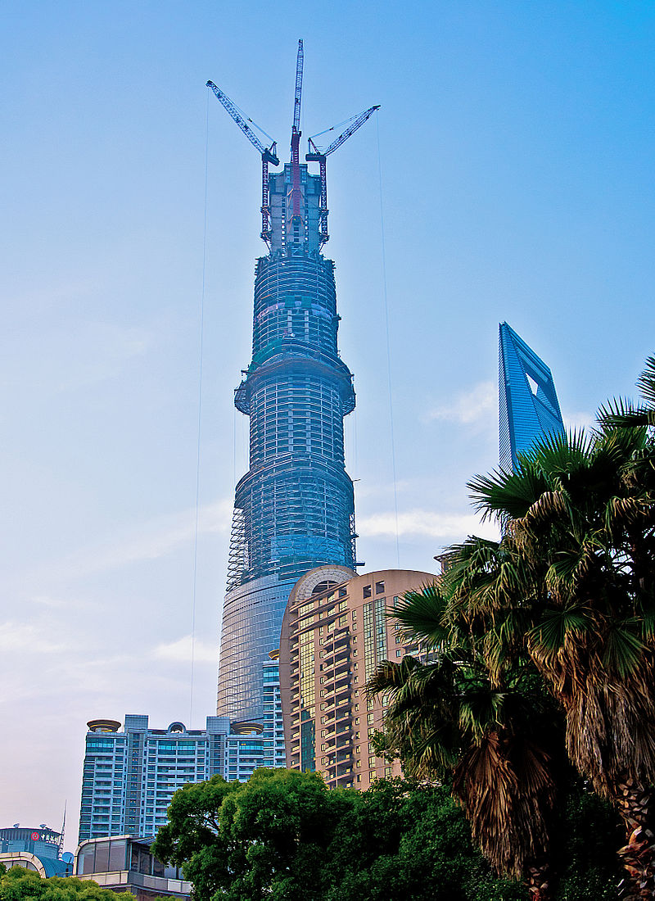

Shanghai Tower
Wieżowiec znajdujący się w dzielnicy Pudong w Szanghaju w bezpośrednim sąsiedztwie Jin Mao oraz SWFC. Budowa zaczęła się w 2008 r. jej zakończenie zaplanowano na rok 2015, ostatecznie budynek został oddany do użytku w roku 2017. Inwestorem oraz wykonawcą jest Shanghai Tower Construction & Development Co., Ltd. reprezentująca trzy firmy: Shanghai Chengtou Corp., Luijiazui Finance & Trade Zone Development Co., Ltd., oraz Shanghai Construction Group. Wieżowiec zaprojektowało biuro architektoniczne Gensler. Koszt budowy wyniósł 2,4 mld $.

W czasie budowy na tle Świętego Meczetu
Budynek został tak skonstruowany, aby zmniejszyć nacisk wywierany przez wiatr, umożliwić zbieranie deszczówki celem wykorzystania jej w systemach HVAC oraz umożliwić generowanie energii przez turbiny wiatrowe. Właściciele budynku ubiegają się o certyfikację China Green Building Committee oraz U.S. Green Building Council.
Widziany z lotu ptaka
Pomieszczenia są wykorzystywane przede wszystkim przez biura, a poza nimi obiekty handlowe, rozrywkowe oraz konferencyjne. W obiekcie znajdzie się również jeden z najwyżej położonych hoteli na świecie – Shanghai Tower J Hotel firmy Jin Jiang Hotels. W jego ofercie znajdzie się 258 pokoi zlokalizowanych na piętrach 84-110. W podziemnych kondygnacjach znajduje się 3-poziomowy parking podziemny, powierzchnie handlowe oraz połączenie z metrem[3]. Na jednym z najwyższych pięter znajduje się taras widokowy[2].
